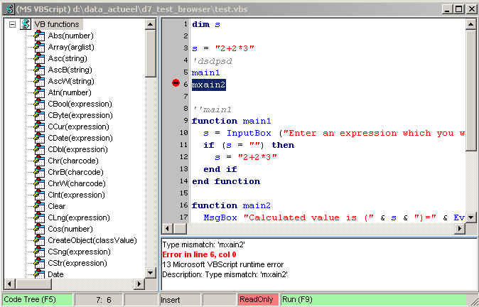

november 2006
VB - script CodeEditor
Introduction
Tree, RM = insert function
Selected code can be started through RM-menu or Alt-F9.
When selected code is executed, lines starting with 2 single quotes are turned into code.
On error + on click on error, jump to error line
